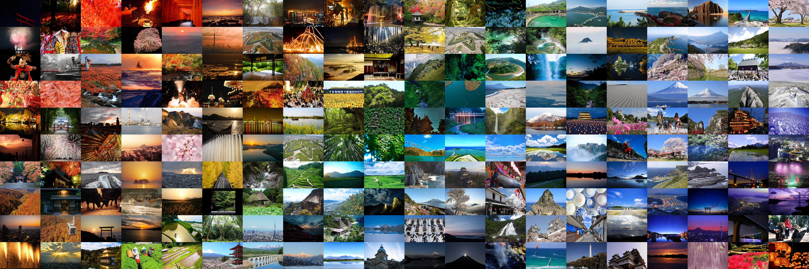

About Me
MY SKILL
- Python (約4年)
- C言語 (約7年)
- GitHub (約1年)
- HTML/CSS (約1年)
- JavaScript (約1年)
- React (約1年)
- TypeScript (約1年)
MY PROFILE
北海道 北見市 生まれ
物心ついた頃から絵を描くことが大好きで、現在に至るまで創作活動を続けています。
「自分の手で何かを生み出し、誰かに届ける」という原点はここにあります。
釧路高専 入学（電子工学分野）
理数系科目への興味から高専に進学。寮生活を通じて自律心を養いながら、5年間みっちりと技術の基礎を叩き込みました。
【習得スキル】
電子回路などのハードウェア知識に加え、C言語による低レイヤー制御からPythonによるデータ分析まで、フルスタックな技術基盤を構築しました。
制作物について
〜LINEスタンプ〜
販売ページはこちら「日常の『伝えたい』を形にする」
コロナ禍で対面コミュニケーションが減る中、「もっと会話のきっかけを作りたい」という課題意識から制作。
友人や家族が実際に使って笑顔になる様子を見て、「ユーザーの感情を動かすモノづくり」の喜びに目覚めました。

〜高専祭で展示した電子楽器〜
⚫︎使用技術:Arduino
「見るだけの展示」から「触れて楽しむ展示」への変革を目指し、子供でも直感的に演奏できる電子楽器を開発しました。
- 技術的工夫: C言語による割り込み処理を駆使し、圧力センサーの値に応じた滑らかな音程制御を実現。「裏コマンド」による自動演奏機能も実装し、ユーザー体験を向上させました。
- チームでの役割: プログラミングリーダーとして開発を主導。GitHubを用いた進捗管理や、ハード班とのインターフェース調整を行い、工期内での完成に貢献しました。
北海道大学 工学部 編入
高専で培った「実装力」に加え、AI・自然言語処理の「理論」を深めるために3年次編入を決意しました。
実践知と理論知を融合させ、より高度な課題解決ができる人材を目指しています。
制作物について
〜工学祭イベント「ダンパ」入退出管理システム〜
⚫︎ 使用技術
- フロントエンド： React, TypeScript, Vite
- バックエンド： Python
大学編入後、最初のグループワークで制作しました。
北大祭開催期間に開催される工学部の祭典である工学祭のコスプレダンスイベント「ダンパ」について、従来は紙で行っていた更衣室の入退出の管理を、QRコードで効率化するシステムを開発しました。
限られた開発期間の中で、主要機能を持つデモ版を完成させました。この経験を通じて、要件定義から実装までのWeb開発の難しさと、チームで役割を分担して開発を進める重要性を学びました。これが、より本格的なWebアプリケーション開発へ挑戦するきっかけとなりました。
グループ内では、Pythonを使用してバックエンドを担当しました。
〜3Dプリンターによるオリジナルプロダクト〜
⚫︎使用技術:Clip Studio Paint, Autodesk Fusion
デジタルなスキル（イラスト・設計）を物理的なモノとして出力するプロセスを実践。
2DイラストのSVGデータを3Dモデルに変換・立体化するワークフローを確立し、アイデアを即座に形にするプロトタイピング能力を高めました。

研究室配属（言語メディア学研究室）
編入前からの希望通り、AI技術に関わる研究がしたいという希望で自然言語処理について扱える「言語メディア学研究室」に所属しました。
この分野の奥深さに魅力を感じ、現在は論文購読や実装を通じて知識を深めつつ、研究を進めています。新たなLLM技術の進歩に貢献したいというモチベーションのもと、主体的に研究に取り組んでいます。
研究の本格化と学外活動へのチャレンジ
東京大学松尾研 GCI 修了
データサイエンスの基礎から機械学習の実装までを網羅的に学習。
他大学の学生や社会人も参加するハイレベルな環境に身を置くことで、視野を広げると共に、研究に直結する分析スキルを習得しました。
FUJIFILM 自然言語アカデミー 修了
研究室で得た知識をビジネスの現場でどう活かすかを学ぶため、実践型インターンに参加。専門外のメンバーへ技術をわかりやすく伝える「翻訳力」を磨きました。
🏆 成果・実績
・参加者100名以上のうち、上位十数名の「優秀者」に選出
・最終成果発表の「代表プレゼンター」を担当
この経験を通じ、自分の技術力とコミュニケーション能力が学外でも通用するという確かな自信を得ることができました。
制作物について
〜Memo Board（React個人開発）〜
⚫︎使用技術: React, TypeScript
GitHubリポジトリはこちら 実際のアプリはこちら「付箋でデスクが散らかる」という自身の課題を解決するために開発。
Reactの学習だけでなく、ドラッグ＆ドロップ操作のUX向上や、コンポーネント設計のベストプラクティスを意識して実装しました。
〜gradation-photos（ハッカソン作品）〜
⚫︎使用技術: Docker,Python
GitHubリポジトリはこちら【概要】 複数枚の画像を解析し、色相順にソートして美しいグラデーション画像を生成するアプリ。
「イラストを色で並べたら綺麗では？」という着想からスタート。RGB→HSV変換による色相判定ロジックを実装しました。
短期間での開発において、Dockerを用いた環境構築の統一や、Gitによるチーム開発フローを主導し、チームワークの重要性を再認識しました。
生成例）
